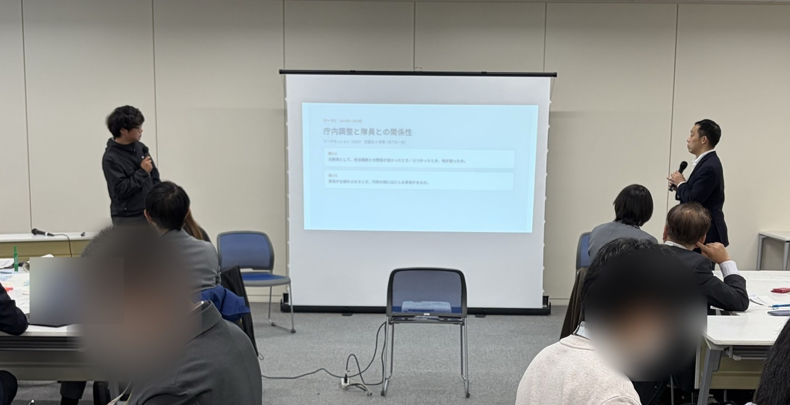
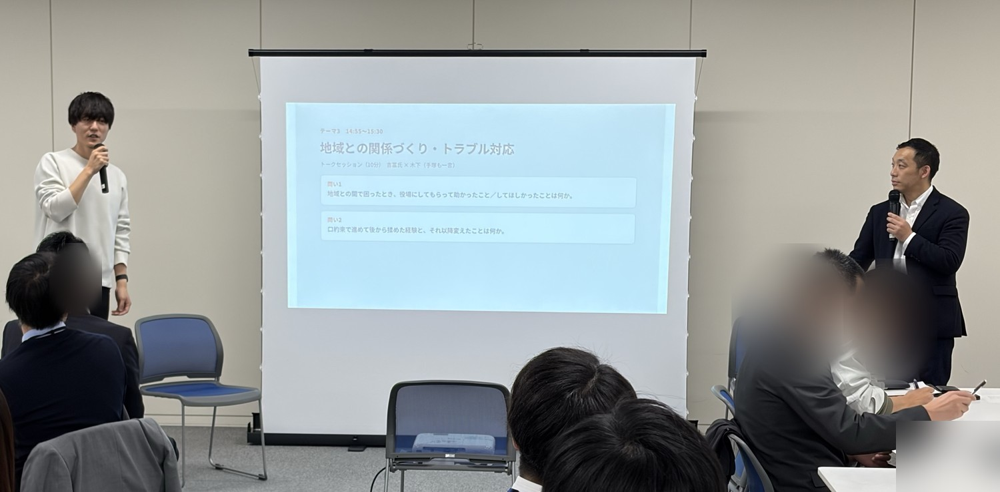
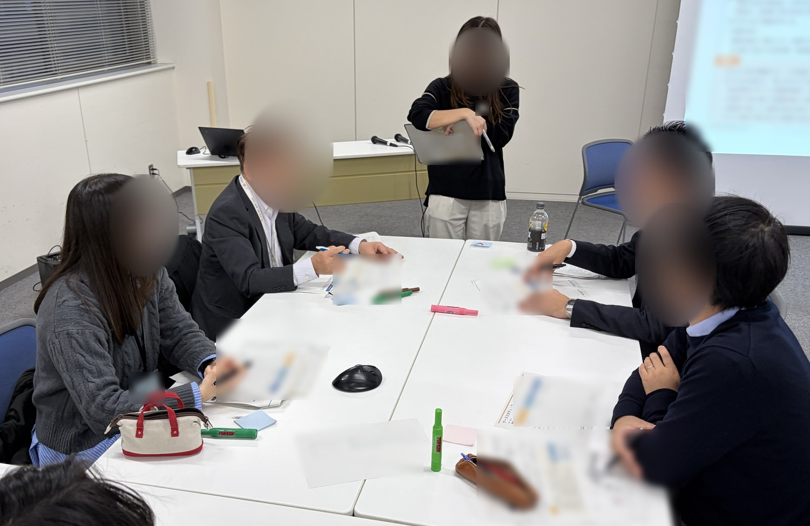
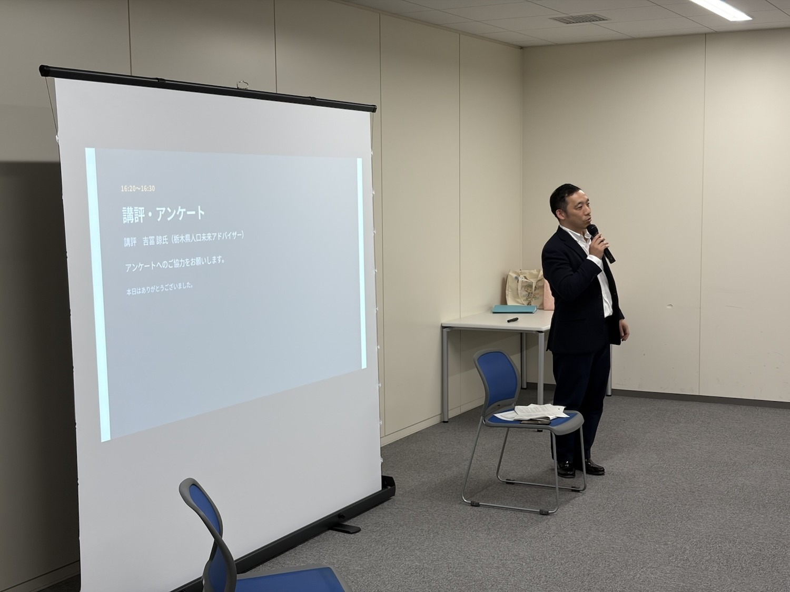

2026年11月17日（火）、栃木県庁北別館で県主催の「地域おこし協力隊担当市町職員研修・交流会」が開かれ、私たちネットワークのメンバーが進行とトークセッションを担当しました。県内の市町で、協力隊の募集や受け入れ、活動の支援に関わる職員が集まりました。
研修を通した問いは、「そのとき、担当職員の自分はどう動くか」です。募集・採用、庁内調整、地域との関係づくり、経費の4つのテーマごとに、協力隊を経験したネットワークのメンバー3人と県の担当者が、栃木県人口未来アドバイザーの吉冨諒さんと対話しました。続いて参加者が架空のケースを読み、自分ならどう対応するかをグループで話し合いました。
募集・採用｜「〇〇活動全般」の募集が生むずれ
自身も協力隊を経験した吉冨さんは、地域の課題とやってほしいことを具体的に示す募集が増えてきた一方で、やってほしいことを詰め込むうちに言葉が抽象的になり、「〇〇活動全般」のような書き方になっている募集も、今なお見かけるといいます。
益子町の協力隊経験者で、募集の支援にも関わる六本木も、ミスマッチの原因として最も多く見るのはこの点だと話しました。住まいを移して協力隊に挑戦する人は、それぞれに強い思いを持っています。広い言葉には自分のやりたいことを重ねて読みがちで、着任後に具体的な仕事を示されたときに、思っていたことと違うと感じてしまいます。
そのずれを確かめる方法として、六本木が紹介したのは、面接の前に事前面談の時間をとることです。募集記事に書ききれない仕事の進め方や雰囲気を、一緒に活動する人の言葉で伝え、応募を考えている人には、ミッションに何を期待しているのか、移住した先でどんな暮らしを望んでいるのかを聞きます。叶えられそうなことと難しいことは率直に伝え、面接ではミッションを本人の言葉で説明してもらう。伝えたつもりのことが、どう受け取られているかまで確かめるためです。
吉冨さんは、隊員を受け入れる現場と制度を運用する課が分かれている場合には、二人三脚で募集をつくり、現場の期待を募集に乗せてほしいと話しました。応募が1人だと採用したくなるものですが、そういうときこそ、期待のずれを面接できちんと確かめておくよう勧めています。
ケースでは、課長、係長、観光協会がそれぞれ隊員に違う役割を期待している、観光分野の募集を取り上げました。グループからは、課内から観光協会まで目的をそろえることや、土日の勤務、隊員の席をどこに置くかまで決めておくことが挙がりました。
庁内調整｜隊員の企画を、説明できる形に
矢板市の協力隊経験者の手塚は、在任中、多いときで月に10本ほどの企画を担当職員に持ちかけていたそうです。通るものもあれば、通らないものもありました。分かれ目は、担当課が市長や課内に説明できる形、いわゆる「立て付け」をつくれるかどうか。市の方針や計画の後押しになりそうな企画には、担当職員が力を入れてくれました。市の計画を示しながら、どの文脈に乗せれば進められるかを一緒に考え、企画の見せ方を整えてくれたこともあったといいます。

吉冨さんは、上位の計画から施策、事業へと段階を踏んで物事が動く行政の仕組みを、着任したばかりの隊員はほとんど知らないと指摘しました。職員には言うまでもないことでも、言葉にして伝え、説明できる形を一緒に考える。提案がうやむやなまま止まると、隊員は意欲を失ってしまうからです。
ケースは、担当職員も評価していた企画が、理由を十分に説明されないまま課長決裁で差し戻された場面です。グループからは、課長に理由を確かめて隊員に伝え、修正案を一緒に考える、企画を切り分けて小さく始める、といった意見が出ました。手塚は、担当職員の発案から生まれた企画も多かったことに触れ、職員の皆さんにも、自分も一緒に楽しめるかという目線で隊員の企画に関わってほしいと呼びかけました。
地域との関係づくり｜着任した隊員を、地域にどう紹介するか
那須町の協力隊経験者の木下は、町で最初の隊員として、活動内容をあらかじめ定めない形で着任しました。土地勘もないなか、最初の数か月はとにかく人に会い、活動の種を探して歩いたといいます。

困ったのは、着任を地域に知らせてもらったときの紹介のされ方でした。地域を活性化してくれる人として伝わったため、行く先々でさまざまな頼みごとが寄せられたのです。吉冨さんは、どんな役割で来た人なのかを役場が地域に説明しておくだけでも、状況は変わると話しました。木下も、地域のこれまでの経緯を教えてもらい、最初に地域を案内してもらえる体制が少しでもあれば、隊員は安心して地域に入っていけると続けました。
地域には、明文化されていない決まりごとがあります。吉冨さんによれば、それは中で暮らす人には当たり前すぎて気づきにくく、外から来た人のほうが違いに気づきやすいものです。そして職員の多くは、役場の受け入れ担当であると同時に、その地域の生活者でもあります。両方の立場を知る職員が隊員と地域の間に入ってくれると、活動のしやすさが大きく変わる。それが木下の実感です。
ケースは、隊員が企画した夏祭りの前夜祭で、音響機材を無償で借りるという口約束をめぐり、後から地域の人に費用を求められた場面です。グループからは、やり取りが文面で残っているか、なぜ依頼していない人が来たのかを確かめる、といった意見が出ました。木下は、口頭での合意を役場が事前にどこまで確認できるかを考えておくことと、地域に頼れる人をつくっておくことを挙げています。
経費｜活動費の相談を、何に照らして判断するか
県の担当者のもとには、資格取得や研修の受講料、パソコンや車両などの物品、任期後の起業準備、着任前の準備など、経費に関する問い合わせが市町から多く寄せられます。最終的に判断するのは市町です。そのうえで県の担当者は、地域おこし協力隊推進要綱に基づく特別交付税措置の対象となり得る経費であることを前提に、活動との関連、定住へのつながり、公費で負担する妥当性、任期後の取扱いの4つを判断のポイントとして示し、住民や議会に説明できるかを軸に考えることを勧めました。
吉冨さんは、よく使われる「ミッション」という言葉は要綱には定めがなく、要綱が定めているのは地域協力活動だと説明しました。経費を考えるときも、その活動が地域協力活動として自治体にどう位置づけられているかに立ち返ることになります。
ケースは、SNSでの観光情報の発信を担う着任2年目の隊員が、任期後のカフェ開業に向けた商品の試作やテスト販売の経費を、活動費から出したいと相談してくる場面です。グループの発表を聞いた県の担当者は、市町によって扱いが異なるところもあったと振り返りました。選択肢がいくつもあるからこそ、市町どうしで情報を交換し、県内に事例をためていってほしい。吉冨さんはそう話しました。

講評｜要綱を、実現の道筋を考える手がかりに
講評で吉冨さんは、市町の枠を越えて自分の市町のやり方を出し合う担当者の様子に、今の栃木県の協力隊を取り巻く状況が表れていると話し、こうした場が次につながっていくことに期待を寄せました。そのうえで、要綱は協力隊の原点として読み込んでおく必要があり、書かれていないことを機械的に断る根拠にするより、どう位置づければ実現できるかを考えるために使ってほしいと呼びかけました。

ネットワークのメンバーは、いずれも県内で協力隊を経験しています。隊員の立場で見てきた受け入れの工夫やすれ違いを、今回のような研修や日々の相談を通じて、市町の担当職員の皆さんと共有していきたいと考えています。
その取り組みの一つとして、研修の最後に、担当職員の皆さんに向けたメールマガジンを始めることをお知らせしました。協力隊の担当は、ほかの業務と兼ねながら受け持つことが多く、ほかの市町の担当者と話せる機会も限られています。一方で、隊員と役場、地域のあいだでは、毎年のように似たつまずきが起きます。メールマガジンでは、そうしたつまずきの事例と、動き方の工夫を毎月お届けします。つまずきが起きる前の備えとして、また迷ったときの判断の手がかりとして、役立てていただければと考えています。